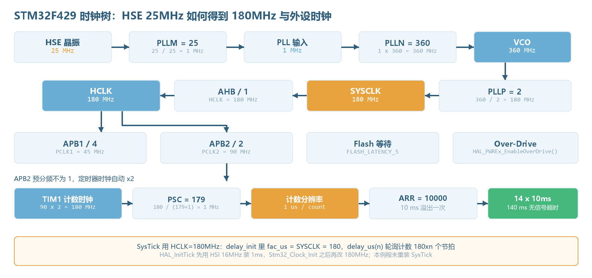
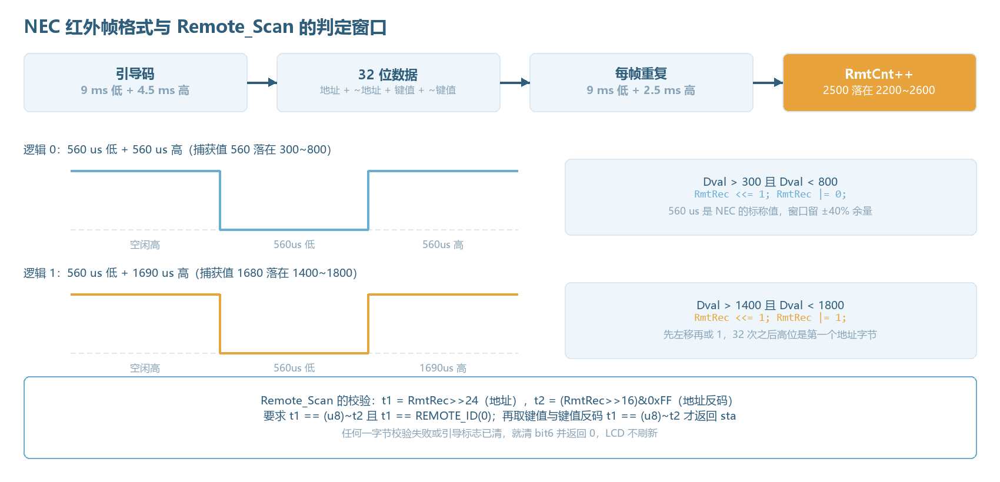
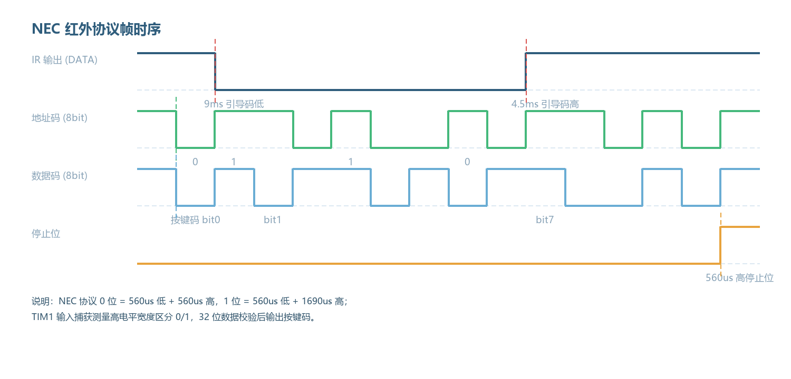
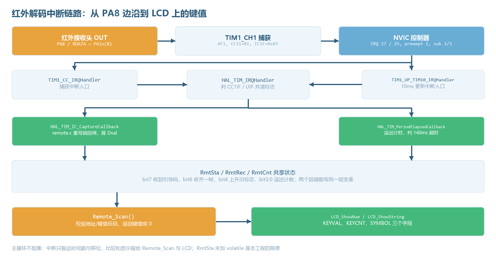
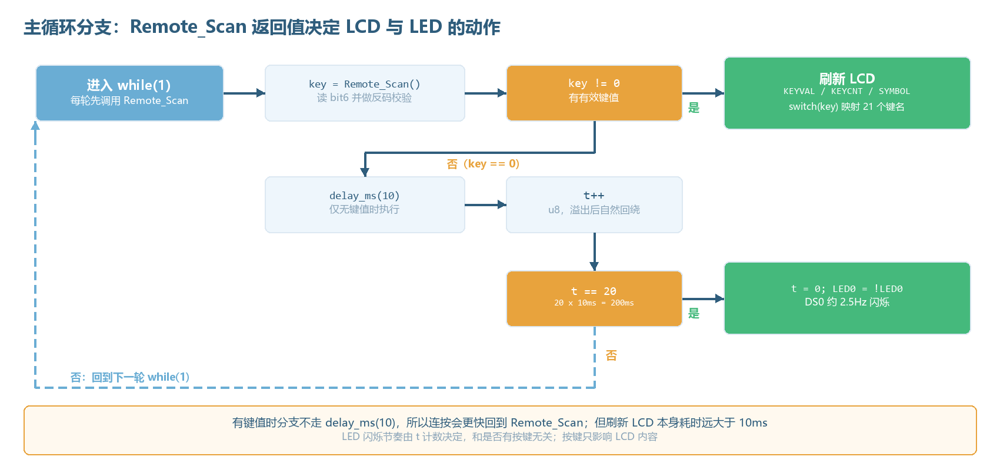

01 实验目标与硬件资源
用 TIM1 输入捕获解出 NEC 红外键值，并把键值、次数、键名显示到 LCD
本实验不涉及无线协议栈，核心只有两件事：把红外接收头输出的高低电平精确计时，再按 NEC 的编码规则把时间还原成 32 位数据。计时交给 TIM1_CH1 的输入捕获，还原交给中断回调和 Remote_Scan()，主循环只负责显示。
| 资源 | 引脚 / 外设 | 在工程中的落点 |
|---|---|---|
| 红外接收头 OUT | PA8，复用 AF1 → TIM1_CH1 | remote.h 的 RDATA PAin(8)；HAL_TIM_IC_MspInit |
| 捕获定时器 | TIM1，APB2，计数时钟 180MHz | Remote_Init()：PSC=179、ARR=10000 |
| 状态指示灯 | PB0 / PB1（DS0 / DS1） | LED_Init()，主循环翻转 LED0 |
| 按键 | PA0 / PC13 / PH2 / PH3 | KEY_Init()，本实验不参与解码 |
| 显示 | LCD（FMC 或 LTDC 屏） | SDRAM_Init() → LCD_Init() |
| 串口 | USART1，PA9/PA10，115200 | uart_init()，printf 重定向 |
PA8 → TIM1_CH1
PSC=179 → 1MHz
ARR=10000 → 10ms
NEC / REMOTE_ID=0
阿波罗板上的红外接收头是 38kHz 解调模块，输出端已经还原成基带波形，所以 MCU 不需要产生载波，只测高电平宽度即可。
02 目录与文件分工
启动代码、SYSTEM 层、HARDWARE 层各管什么，先分清再读源码
| 目录 / 文件 | 职责 | 本实验需要关注的点 |
|---|---|---|
CORE/startup_stm32f429xx.s | 栈堆定义、向量表、Reset_Handler | 栈 0x400、堆 0x200；跳 __main |
USER/system_stm32f4xx.c | SystemInit：FPU、VTOR、RCC 复位 | 不改 PLL，时钟留给 Stm32_Clock_Init |
USER/main.c | 初始化顺序与主循环 | 9 个初始化调用，顺序不可随意调换 |
USER/stm32f4xx_it.c | 内核异常与 SysTick 入口 | 本实验的 TIM1 中断不在这里 |
SYSTEM/sys | 位带宏、时钟初始化 | PAin(8)、Stm32_Clock_Init |
SYSTEM/delay | SysTick 轮询延时 | fac_us=180，供 LCD/初始化使用 |
SYSTEM/usart | USART1 与 printf 重定向 | fputc 逐字节发送 |
HARDWARE/REMOTE | 捕获初始化 + NEC 解码 | Remote_Init、两个回调、Remote_Scan |
HARDWARE/LCD、SDRAM、LED、KEY | 板级外设 | 显示与指示灯，不参与协议 |
TIM1 的两个中断服务函数写在
remote.c 里，而不是 stm32f4xx_it.c。向量表只认函数名，文件放在哪里都可以，但同名函数只能有一份。03 启动流程总览
从取 MSP 到 while(1)，13 个步骤的先后关系

main 的初始化顺序
int main(void)
{
u8 key;
u8 t=0;
u8 *str=0;
HAL_Init(); // 初始化HAL库：优先级分组、SysTick、Cache
Stm32_Clock_Init(360,25,2,8); // 设置时钟,180Mhz
delay_init(180); // 初始化延时函数
uart_init(115200); // 初始化USART
LED_Init(); // 初始化LED
KEY_Init(); // 初始化按键
SDRAM_Init(); // 初始化SDRAM
LCD_Init(); // 初始化LCD
Remote_Init(); // 初始化红外接收
POINT_COLOR=RED;
LCD_ShowString(30,50,200,16,16,"Apollo STM32F4/F7");
LCD_ShowString(30,70,200,16,16,"REMOTE TEST");
LCD_ShowString(30,90,200,16,16,"ATOM@ALIENTEK");
LCD_ShowString(30,110,200,16,16,"2016/1/16");
LCD_ShowString(30,130,200,16,16,"KEYVAL:");
LCD_ShowString(30,150,200,16,16,"KEYCNT:");
LCD_ShowString(30,170,200,16,16,"SYMBOL:");
POINT_COLOR=BLUE;
while(1)
{
key=Remote_Scan();
// ... 显示分支见第 11 节
}
}
关键逻辑说明
- HAL_Init 必须第一：它建立 1ms SysTick 并设置 NVIC 优先级分组，后面的 delay/LCD 都依赖这个时基。
- 时钟紧跟 HAL_Init：delay_init(180) 的 180 必须与真实 SYSCLK 一致，否则所有 us/ms 延时都按比例偏差。
- SDRAM 在 LCD 之前：F429 的 LTDC 显存和部分 LCD 驱动把帧缓冲放在 SDRAM，SDRAM 没起来时 LCD_Init 会花屏或死等。
- Remote_Init 放最后：它只配置 TIM1 和 PA8，不依赖 LCD；但放在最后可以保证前面任何一步失败时能通过串口/指示灯先看到。
- 初始化阶段全部是阻塞式，没有开总中断之外的动作；真正的异步从
HAL_TIM_IC_Start_IT开始。
04 启动文件与向量表
栈堆在哪里、Reset_Handler 做了什么、VTOR 指向哪
Stack_Size EQU 0x00000400
AREA STACK, NOINIT, READWRITE, ALIGN=3
Stack_Mem SPACE Stack_Size
__initial_sp
Heap_Size EQU 0x00000200
AREA HEAP, NOINIT, READWRITE, ALIGN=3
__heap_base
Heap_Mem SPACE Heap_Size
__heap_limit
PRESERVE8
THUMB
关键逻辑说明
- 栈只有 0x400 = 1KB，堆 0x200 = 512B。LCD 字符串、printf 浮点格式化都吃栈，递归或大局部数组很容易溢出。
__initial_sp标号紧贴栈顶，链接器把它填进向量表第 0 项；复位时 Cortex-M4 硬件自动把它装入 MSP。PRESERVE8要求 8 字节栈对齐，调用__main前由启动代码保证。
Reset_Handler
Reset_Handler PROC
EXPORT Reset_Handler [WEAK]
IMPORT SystemInit
IMPORT __main
LDR R0, =SystemInit
BLX R0
LDR R0, =__main
BX R0
ENDP
关键逻辑说明
- 顺序固定：SystemInit → __main。前者只做芯片级最小初始化，后者是 ARM C 库的入口，负责把 .data 从 Flash 搬到 RAM、把 .bss 清零，再调用
main()。 - 启动文件里没有手写 copy/zero 循环，分散加载由 Keil 的
__main完成；换 GCC 时对应的是Reset_Handler里的LoopCopyDataInit，不要混用。 - 向量表在文件前部用
DCD逐项列出，TIM1_CC_IRQHandler、TIM1_UP_TIM10_IRQHandler的名字必须与 C 函数完全一致，否则链接器填入默认死循环。
向量表基址
void SystemInit(void)
{
/* FPU settings ------------------------------------------------------------*/
#if (__FPU_PRESENT == 1) && (__FPU_USED == 1)
SCB->CPACR |= ((3UL << 10*2)|(3UL << 11*2)); /* set CP10 and CP11 Full Access */
#endif
/* Configure the Vector Table location add offset address ------------------*/
#ifdef VECT_TAB_SRAM
SCB->VTOR = SRAM_BASE | VECT_TAB_OFFSET;
#else
SCB->VTOR = FLASH_BASE | VECT_TAB_OFFSET; /* Vector Table Relocation in Internal FLASH */
#endif
}
FLASH_BASE = 0x08000000，VECT_TAB_OFFSET = 0x00，所以 VTOR 指向 0x08000000。做 IAP 或 bootloader 时改的是这个偏移，不是启动文件。05 SystemInit 与 HAL_Init
两个都叫“初始化”，但一个只管内核，一个管 HAL 时基与优先级
SystemInit 在 __main 之前执行，此时 .data/.bss 还没准备好，所以它只能碰寄存器和 Flash，不能调用 HAL 或使用全局变量。它把 FPU 打开、VTOR 设到 Flash 首地址，并把 RCC 恢复到复位状态（HSI 16MHz）。
HAL_StatusTypeDef HAL_Init(void)
{
HAL_InitTick(TICK_INT_PRIORITY); // 先用 HSI 装 1ms SysTick
HAL_MspInit(); // 板级最低层初始化，本工程为空实现
return HAL_OK;
}
关键逻辑说明
HAL_Init内部还会调用HAL_NVIC_SetPriorityGrouping(NVIC_PRIORITYGROUP_2)：2 位抢占优先级 + 2 位子优先级，所以后面HAL_NVIC_SetPriority(TIM1_CC_IRQn,1,3)的 1/3 才合法。HAL_InitTick此时用的还是 HSI 16MHz，装出来是 1ms；等Stm32_Clock_Init把 SYSCLK 切到 180MHz 后，SysTick 的 LOAD 没有重装，所以中断周期变成 180000/16000 ≈ 11.25ms 的说法是错的——LOAD 不变、计数时钟变快，实际周期变为 1ms 的 16/180。工程里没有重装，因此 HAL 的 1ms 节拍并不准；本实验不依赖HAL_Delay，不受影响。- 本工程真正可靠的毫秒延时来自
delay_ms，它通过 SysTick->VAL 轮询计数，只依赖当前 HCLK，不依赖中断。
不要在主循环里混用
HAL_Delay() 和 delay_ms()：前者依赖 SysTick 中断，后者是忙等；两者对当前时钟的假设不同，混用会出现“同一数值、不同时长”。06 时钟、延时与串口
25MHz 晶振 → 180MHz SYSCLK，再分出 45/90MHz 与外设时钟

PLL 参数
RCC_OscInitStructure.OscillatorType=RCC_OSCILLATORTYPE_HSE; // 时钟源为HSE RCC_OscInitStructure.HSEState=RCC_HSE_ON; // 打开HSE RCC_OscInitStructure.PLL.PLLState=RCC_PLL_ON; // 打开PLL RCC_OscInitStructure.PLL.PLLSource=RCC_PLLSOURCE_HSE; // PLL时钟源选择HSE RCC_OscInitStructure.PLL.PLLM=pllm; // 25 RCC_OscInitStructure.PLL.PLLN=plln; // 360 RCC_OscInitStructure.PLL.PLLP=pllp; // 2 RCC_OscInitStructure.PLL.PLLQ=pllq; // 8 ret=HAL_RCC_OscConfig(&RCC_OscInitStructure); ... ret=HAL_PWREx_EnableOverDrive(); // 180MHz 必须开 Over-Drive ... RCC_ClkInitStructure.AHBCLKDivider=RCC_SYSCLK_DIV1; // HCLK = 180MHz RCC_ClkInitStructure.APB1CLKDivider=RCC_HCLK_DIV4; // PCLK1 = 45MHz RCC_ClkInitStructure.APB2CLKDivider=RCC_HCLK_DIV2; // PCLK2 = 90MHz ret=HAL_RCC_ClockConfig(&RCC_ClkInitStructure,FLASH_LATENCY_5);
关键逻辑说明
- 算式：
25MHz / M(25) = 1MHz，1MHz × N(360) = 360MHz，360MHz / P(2) = 180MHz；Q=8 得到 45MHz 给 USB/SDIO。 - 180MHz 超过 168MHz 档，必须先
HAL_PWREx_EnableOverDrive()，否则 PLL 切不过去，HAL 返回错误后工程停在while(1)。 - Flash 5 个等待周期对应 180MHz、3.3V 的 6 CPU 周期；少设会取指错，多设会白掉性能。
- APB2 分频系数不为 1，定时器时钟自动 ×2：TIM1 得到
90 × 2 = 180MHz，这是 1MHz 计数的前提。
delay_init：只设 fac_us，不改 LOAD
void delay_init(u8 SYSCLK)
{
HAL_SYSTICK_CLKSourceConfig(SYSTICK_CLKSOURCE_HCLK); // SysTick频率为HCLK
fac_us=SYSCLK; // 180，1us 的节拍数
}
非 OS 版本里 delay_us(n) 的做法是：记录进入时的 SysTick->VAL，累加 n × fac_us 个节拍，靠 24 位递减计数器的回绕判断是否走完。它不关中断、不依赖 SysTick 中断，所以 1ms 中断准不准都不影响 us 延时。
printf 重定向
int fputc(int ch, FILE *f)
{
while((USART1->SR&0X40)==0); // 等待发送缓冲空
USART1->DR=(u8)ch;
return ch;
}
关键逻辑说明
uart_init(115200)里把 PA9/PA10 配成 AF7，并使能 USART1 时钟；波特率由HAL_UART_Init按 PCLK2=90MHz 计算。fputc是阻塞发送：每字节等 TXE，主循环里大量 printf 会拖慢按键响应，调试完应删掉。- 使用 printf 需要在 Keil 里勾选 MicroLIB，否则会链接到半主机
_sys_exit而卡死。
07 红外接收与 TIM1 捕获初始化
PA8 复用为 TIM1_CH1，PSC=179 把 180MHz 变成 1MHz
void Remote_Init(void)
{
TIM_IC_InitTypeDef TIM1_CH1Config;
TIM1_Handler.Instance=TIM1; // 通用定时器1
TIM1_Handler.Init.Prescaler=179; // 1M的计数频率,1us加1
TIM1_Handler.Init.CounterMode=TIM_COUNTERMODE_UP; // 向上计数器
TIM1_Handler.Init.Period=10000; // 自动装载值
TIM1_Handler.Init.ClockDivision=TIM_CLOCKDIVISION_DIV1;
HAL_TIM_IC_Init(&TIM1_Handler);
TIM1_CH1Config.ICPolarity=TIM_ICPOLARITY_RISING; // 上升沿捕获
TIM1_CH1Config.ICSelection=TIM_ICSELECTION_DIRECTTI;// 映射到TI1上
TIM1_CH1Config.ICPrescaler=TIM_ICPSC_DIV1; // 不分频
TIM1_CH1Config.ICFilter=0x03; // IC1F=0003 8个定时器时钟周期滤波
HAL_TIM_IC_ConfigChannel(&TIM1_Handler,&TIM1_CH1Config,TIM_CHANNEL_1);
HAL_TIM_IC_Start_IT(&TIM1_Handler,TIM_CHANNEL_1); // 开始捕获
__HAL_TIM_ENABLE_IT(&TIM1_Handler,TIM_IT_UPDATE); // 使能更新中断
}
MSP：引脚与 NVIC
void HAL_TIM_IC_MspInit(TIM_HandleTypeDef *htim)
{
GPIO_InitTypeDef GPIO_Initure;
__HAL_RCC_TIM1_CLK_ENABLE(); // 使能TIM1时钟
__HAL_RCC_GPIOA_CLK_ENABLE(); // 开启GPIOA时钟
GPIO_Initure.Pin=GPIO_PIN_8; // PA8
GPIO_Initure.Mode=GPIO_MODE_AF_PP; // 复用推挽
GPIO_Initure.Pull=GPIO_PULLUP; // 上拉
GPIO_Initure.Speed=GPIO_SPEED_HIGH; // 高速
GPIO_Initure.Alternate=GPIO_AF1_TIM1; // PA8 → TIM1_CH1
HAL_GPIO_Init(GPIOA,&GPIO_Initure);
HAL_NVIC_SetPriority(TIM1_CC_IRQn,1,3); // 捕获中断
HAL_NVIC_EnableIRQ(TIM1_CC_IRQn);
HAL_NVIC_SetPriority(TIM1_UP_TIM10_IRQn,1,2); // 更新中断
HAL_NVIC_EnableIRQ(TIM1_UP_TIM10_IRQn);
}
关键逻辑说明
- 计数频率：
180MHz / (179+1) = 1MHz，即 1 个计数 = 1μs；捕获值直接就是微秒数，省掉换算。 - 溢出周期：
(10000+1) × 1μs ≈ 10ms。一次按键最长的高电平是 4.5ms，不会跨溢出；跨溢出的情况由更新中断补记。 - 滤波
IC1F=0x03要求有效电平持续 8 个采样周期才认边沿，能滤掉接收头输出的毛刺，但会带来约 0.04μs 级延迟，对 560μs 判定无影响。 GPIO_PULLUP是必要的：接收头多为开漏输出，模块没供电或没接时 PA8 不能浮空，否则会随机触发捕获。HAL_TIM_IC_Start_IT内部使能 CC1IE；__HAL_TIM_ENABLE_IT(TIM_IT_UPDATE)单独打开更新中断，两者缺一不可。
08 输入捕获与边沿切换
一次完整的高电平需要“上升沿记起点、下降沿读终点”两次捕获
void HAL_TIM_IC_CaptureCallback(TIM_HandleTypeDef *htim)
{
if(htim->Instance==TIM1)
{
if(RDATA) // 当前为高 → 刚发生上升沿
{
TIM_RESET_CAPTUREPOLARITY(&TIM1_Handler,TIM_CHANNEL_1); // 先清原设置
TIM_SET_CAPTUREPOLARITY(&TIM1_Handler,TIM_CHANNEL_1,TIM_ICPOLARITY_FALLING);
__HAL_TIM_SET_COUNTER(&TIM1_Handler,0); // 清空计数器，从0开始量高电平
RmtSta|=0X10; // 标记上升沿已捕获
}else // 下降沿
{
Dval=HAL_TIM_ReadCapturedValue(&TIM1_Handler,TIM_CHANNEL_1);
TIM_RESET_CAPTUREPOLARITY(&TIM1_Handler,TIM_CHANNEL_1);
TIM_SET_CAPTUREPOLARITY(&TIM1_Handler,TIM_CHANNEL_1,TIM_ICPOLARITY_RISING);
if(RmtSta&0X10) // 完成一次高电平捕获
{
// ... 解码见第 09 节
}
RmtSta&=~(1<<4);
}
}
}
关键逻辑说明
- NEC 的每个位都是“低 560μs + 高 560/1690μs”，真正携带信息的是高电平宽度，所以每次上升沿清零计数器，下降沿读 CCR1。
TIM_RESET_CAPTUREPOLARITY必须先调用再改极性，这是 HAL 的要求：直接写 CC1P 可能被影子寄存器延迟，导致下一次边沿判错。- 捕获值同时起到清 CC1IF 的作用，读 CCR1 后不必再手动清标志。
RmtSta bit4是“已见上升沿”的配对标志；只有它置位时，下降沿的 Dval 才是有效的高电平宽度，否则是噪声。- 回调里没有任何延时和显示，执行时间约几微秒，不会影响下一个 560μs 时隙。
| 捕获值 Dval | 对应物理量 | 解码动作 |
|---|---|---|
| 300 ~ 800 | 560μs 高电平 | 收到逻辑 0 |
| 1400 ~ 1800 | 1690μs 高电平 | 收到逻辑 1 |
| 2200 ~ 2600 | 2.5ms 重复码高电平 | RmtCnt++ |
| 4200 ~ 4700 | 4.5ms 引导高电平 | 置引导码标志 bit7，RmtCnt=0 |
09 NEC 解码与 Remote_Scan
32 位移位、反码校验、按键次数与超时清理

位解码
if(RmtSta&0X80) // 已收到引导码 { if(Dval>300&&Dval<800) // 560为标准值 { RmtRec<<=1; // 左移一位 RmtRec|=0; // 接收到0 }else if(Dval>1400&&Dval<1800) // 1680为标准值 { RmtRec<<=1; RmtRec|=1; // 接收到1 }else if(Dval>2200&&Dval<2600) // 2500为标准值 { RmtCnt++; // 按键次数增加1次 RmtSta&=0XF0; // 清空计时器 } }else if(Dval>4200&&Dval<4700) // 4500为标准值 { RmtSta|=1<<7; // 标记成功接收引导码 RmtCnt=0; // 清除按键次数 }
超时与“收齐一帧”
void HAL_TIM_PeriodElapsedCallback(TIM_HandleTypeDef *htim)
{
if(htim->Instance==TIM1){
if(RmtSta&0x80) // 上次有数据被接收到了
{
RmtSta&=~0X10; // 取消上升沿已捕获标记
if((RmtSta&0X0F)==0X00)RmtSta|=1<<6; // 标记已完成一次采集
if((RmtSta&0X0F)<14)RmtSta++;
else
{
RmtSta&=~(1<<7); // 清空引导标识
RmtSta&=0XF0; // 清空计数器
}
}
}
}
关键逻辑说明
- 每 10ms 更新中断进入一次，低 4 位是溢出计数。计数回到 0 的那一拍说明“刚刚有边沿把计数器清零”，即一帧 32 位已经收完，于是置 bit6。
- 低 4 位加到 14（约 140ms）仍未被边沿清零，说明遥控器已松开，清 bit7 和计数器，防止残留半帧污染下一次按键。
- NEC 帧是 地址 + ~地址 + 命令 + ~命令，先收到的字节落在 RmtRec 高 8 位，所以
t1=RmtRec>>24是地址。 - 重复码只发 9ms+2.5ms，不含数据，所以只能增加 RmtCnt，不能刷新 RmtRec。
Remote_Scan 的反码校验
u8 Remote_Scan(void)
{
u8 sta=0;
u8 t1,t2;
if(RmtSta&(1<<6)) // 得到完整按键信息
{
t1=RmtRec>>24; // 地址码
t2=(RmtRec>>16)&0xff; // 地址反码
if((t1==(u8)~t2)&&t1==REMOTE_ID) // ID 与地址校验
{
t1=RmtRec>>8;
t2=RmtRec;
if(t1==(u8)~t2)sta=t1; // 键值反码校验通过
}
if((sta==0)||((RmtSta&0X80)==0)) // 数据错误或已松开
{
RmtSta&=~(1<<6);
RmtCnt=0;
}
}
return sta;
}
关键逻辑说明
- 先校验地址反码，再校验键值反码，两层都过才返回键值；任何一层失败都返回 0，LCD 不刷新。
REMOTE_ID在remote.h里定义为 0，只适配配套遥控器；换遥控器要同时改这里，否则永远返回 0。- 校验失败时顺手清 bit6 和 RmtCnt，避免同一帧被反复读出。
- 返回 0 还有一个语义：键值 0 本身不可用（switch 里 case 0 是 "ERROR"），所以 0 被保留为“无按键”。

10 中断链路与优先级
两个 IRQ 同抢 1 个回调入口，优先级只差子优先级

| 环节 | 名称 / 编号 | 工程中的证据 |
|---|---|---|
| 触发源 | PA8 边沿（上升/下降交替） | RDATA、TIM_ICPOLARITY_* |
| 外设 | TIM1 CH1，CC1IF | HAL_TIM_IC_Start_IT |
| 溢出源 | TIM1 UIF，每 10ms | __HAL_TIM_ENABLE_IT(TIM_IT_UPDATE) |
| NVIC | TIM1_CC_IRQn = 27，1/3 | HAL_NVIC_SetPriority(TIM1_CC_IRQn,1,3) |
| NVIC | TIM1_UP_TIM10_IRQn = 25，1/2 | HAL_NVIC_SetPriority(TIM1_UP_TIM10_IRQn,1,2) |
| ISR | 两个同名入口都调 HAL_TIM_IRQHandler | remote.c 第 77、83 行 |
| 回调 | IC / PeriodElapsed 两个弱函数被重写 | HAL_TIM_IC_CaptureCallback、HAL_TIM_PeriodElapsedCallback |
关键逻辑说明
- 两个中断抢占优先级都是 1，彼此不能打断；子优先级 2 的更新中断先于子优先级 3 的捕获中断排队。对解码没有影响，因为两者操作的是不同标志位。
- 捕获中断频率最高约 2kHz（560μs 一个边沿），每次只做几十条指令，CPU 占用可以忽略。
RmtSta、RmtRec、RmtCnt在中断与主循环之间共享，却没有volatile，也没有临界区；这是本工程的隐患，靠 -O0/关优化时“碰巧正确”。- 若把
Remote_Scan里的 32 位读取拆成多条指令，可能在中断更新 RmtRec 时读到半新半旧的值，表现为偶发键值错误。
工程中未体现对共享变量的原子保护。要工程化，至少给三个变量加
volatile，并在 Remote_Scan 读取前短暂关中断。11 主循环显示与交互演示
有键值才刷新 LCD，无键值延时 10ms；LED 每 20 轮翻转

while(1)
{
key=Remote_Scan();
if(key)
{
LCD_ShowNum(86,130,key,3,16); // 显示键值
LCD_ShowNum(86,150,RmtCnt,3,16); // 显示按键次数
switch(key)
{
case 162:str="POWER";break;
case 98:str="UP";break;
case 2:str="PLAY";break;
case 194:str="RIGHT";break;
case 34:str="LEFT";break;
case 168:str="DOWN";break;
// ... 其余键值省略，完整 21 项见 main.c
}
LCD_Fill(86,170,116+8*8,170+16,WHITE); // 清除之前的显示
LCD_ShowString(86,170,200,16,16,str); // 显示SYMBOL
}else delay_ms(10);
t++;
if(t==20)
{
t=0;
LED0=!LED0;
}
}
关键逻辑说明
Remote_Scan返回 0 表示“没有新键值”，此时才延时 10ms；有键值时立即进入下一轮，保证连按不丢。RmtCnt是重复码计数，按住不放会持续增加；松开约 140ms 后被清零。- 先
LCD_Fill再显示 SYMBOL，是因为新键名可能比旧键名短，不清会残留字符。 t是 u8，20 次循环约 200ms（无键值时）翻转一次 LED0，用来证明主循环还活着。- 键值 0 被
if(key)过滤掉，所以 switch 里的case 0:"ERROR"实际不会执行。
交互演示（仅演示逻辑）
按下遥控器后 Remote_Scan 与显示分支
键值：-- 次数：0 键名：-- 说明：等待按键
演示只复现 main.c 的 if/switch 与 Remote_Scan 的校验结果，不模拟 38kHz 载波与真实捕获时序。
| 操作 | 可观察现象 |
|---|---|
| 上电 | LCD 显示 5 行固定字符串，KEYVAL/KEYCNT/SYMBOL 为空，DS0 约 2.5Hz 闪烁 |
| 按 POWER | KEYVAL=162，KEYCNT 递增，SYMBOL=POWER |
| 按住不放 | KEYCNT 持续增加，键值与 SYMBOL 不变 |
| 换按 UP | KEYVAL=98，SYMBOL 变为 UP，旧字符被 LCD_Fill 清掉 |
| 遮挡/拔掉接收头 | 无新键值，LCD 保持最后内容，LED 继续闪 |
12 关键逻辑复盘
把“为什么这样写”串成一条线
- 时基先行：HAL_Init 建 SysTick，Stm32_Clock_Init 把时钟拉到 180MHz，delay_init 记录 fac_us；三者顺序错了，后面所有时间都不对。
- 捕获分辨率：PSC=179 把 180MHz 分成 1MHz，捕获值天然是微秒，解码窗口可以直接写 300~800 这样的数。
- 边沿换向：上升沿清计数器并改成下降沿，下降沿读 CCR1 再改回上升沿；换向必须用 HAL 的 RESET/SET 宏。
- 只测高电平：NEC 的 0/1 差异在高电平长度（560 vs 1690μs），低电平固定 560μs，所以不需要测低电平。
- 两级超时：10ms 更新中断既负责“一帧收齐”的判定（低 4 位回 0），也负责“松手”的判定（加到 14）。
- 反码校验：地址与键值各带一个反码字节，两次
(u8)~比较能过滤掉大部分误码。 - 主循环不解码：所有时间敏感工作都在中断里完成，主循环只读结果、刷屏、闪灯，避免 LCD 的毫秒级操作破坏时序。
- 共享变量风险：RmtSta/RmtRec/RmtCnt 无 volatile、无临界区，是本工程最值得改进的地方。
如果要把这套代码移植到 FreeRTOS，必须给共享变量加
volatile，并把 Remote_Scan 放进临界区或消息队列，否则编译器优化和任务切换都会让解码偶发失败。13 常见问题排查
先分清是“收不到边沿”还是“收到了但校验不过”
| 现象 | 优先怀疑 | 定位方法 |
|---|---|---|
| LCD 正常但按键无反应 | PA8 没接到 TIM1_CH1 / 接收头没供电 | 示波器看 PA8 是否有 9ms 低 + 4.5ms 高的波形 |
| KEYVAL 偶尔正确、多数为 0 | 反码校验失败或 REMOTE_ID 不匹配 | 在 Remote_Scan 里打印 RmtRec 的 4 个字节 |
| 所有键值都偏移/错乱 | 捕获极性切换漏了 RESET 宏 | 检查是否只写了 CC1P，没有先清影子寄存器 |
| 按住只加 1 次 | 重复码窗口 2200~2600 没进 | 打印重复码的 Dval，确认在 2.5ms 附近 |
| 松手后键值一直不消失 | 更新中断没使能 | 确认 __HAL_TIM_ENABLE_IT(TIM_IT_UPDATE) 执行 |
| LED 不闪 | 主循环卡在 LCD 或 delay | 在 while 里翻转一个空闲 GPIO 用示波器看 |
先用示波器确认“有没有波形”，再用串口确认“解出来的 32 位对不对”，最后才看 LCD。跳过前两步容易把硬件问题当成软件 bug。
14 总结
一个定时器、两个中断、三次判断，构成完整的红外解码闭环
实验31 的价值在于把“时间”变成“数据”：TIM1 把 180MHz 分频到 1MHz，捕获寄存器把电平宽度变成微秒数，回调按 NEC 的四个时间窗口把它移位成 32 位，最后用地址/键值反码做完整性校验。整个链路里没有任何阻塞操作，主循环可以安心刷 LCD。
从启动角度看，它和前面实验的骨架完全一致：启动文件给栈和向量表，SystemInit 打开 FPU 与 VTOR，HAL_Init 建时基，Stm32_Clock_Init 拉时钟，delay/uart 提供基础设施，最后才是本实验的 Remote_Init。把这条骨架记住，换任何外设都只是替换最后一两步。
下一步可以尝试：给共享变量加
volatile、把键值映射表从 switch 改成数组、用 DMA 或从模式门控捕获更长的协议（如 NEC 扩展帧）。